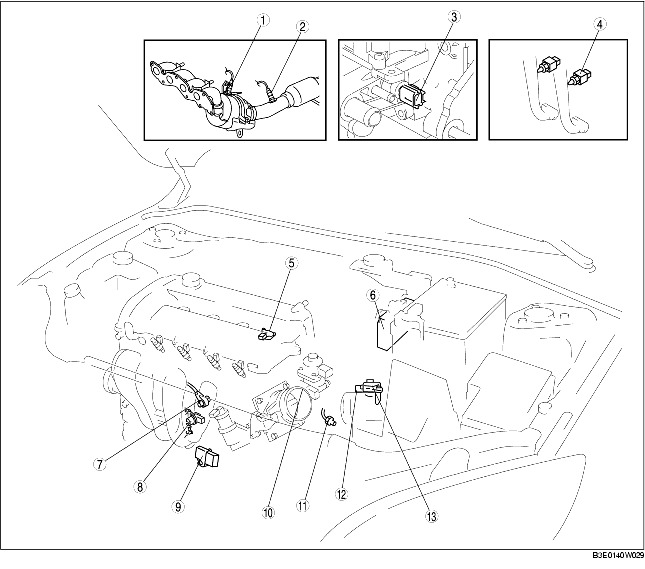

INDEX D'EMPLACEMENT DE SYSTEME DE COMMANDE [LF]
B3E014018880W10

.
1
HO2S avant
(voir la section
INSPECTION DE SONDE D'OXYGENE DES GAZ D'ECHAPPEMENT PRECHAUFFEE AVANT (HO2S) [LF]
.)
(voir la section
DEPOSE/REPOSE DE SONDE D'OXYGENE DE GAZ D'ECHAPPEMENT PRECHAUFFEE (HO2S) [LF]
.)
2
HO2S arrière
(voir la section
INSPECTION DE SONDE D'OXYGENE DES GAZ D'ECHAPPEMENT PRECHAUFFEE ARRIERE (HO2S) [LF]
.)
(voir la section
DEPOSE/REPOSE DE SONDE D'OXYGENE DE GAZ D'ECHAPPEMENT PRECHAUFFEE (HO2S) [LF]
.)
3
Capteur ECT
(voir la section
DÉPOSE/REPOSE DE CAPTEUR DE TEMPERATURE DE LIQUIDE DE REFROIDISSEMENT MOTEUR (ECT) [LF]
.)
(voir la section
INSPECTION DE CAPTEUR DE TEMPERATURE DE LIQUIDE DE REFROIDISSEMENT MOTEUR (ECT) [LF]
.)
4
Contacteur CPP
(voir la section
INSPECTION DE CONTACTEUR DE POSITION DE PEDALE D'EMBRAYAGE (CPP) [LF]
.)
5
Capteur CMP
(voir la section
DEPOSE/REPOSE DU CAPTEUR DE POSITION D'ARBRE A CAMES (CMP) [LF]
.)
(voir la section
INSPECTION DE CAPTEUR DE POSITION D'ARBRE A CAMES (CMP) [LF]
.)
6
PCM
(voir la section
DÉPOSE/REPOSE DE PCM [LF]
.)
(voir la section
INSPECTION DE PCM [LF]
.)
(voir la section
CONFIGURATION DE PCM [LF]
.)
7
KS
(voir la section
DÉPOSE/REPOSE DE CAPTEUR DE DÉTONATION (KS) [LF]
.)
(voir la section
INSPECTION DE CAPTEUR DE COGNEMENT (KS) [LF]
.)
8
Capteur CKP
(voir la section
DEPOSE/REPOSE DE CAPTEUR DE POSITION DE VILEBREQUIN (CKP) [LF]
.)
(voir la section
INSPECTION DE CAPTEUR DE POSITION DE VILEBREQUIN (CKP) [LF]
.)
9
Capteur MAP
(voir la section
INSPECTION DE CAPTEUR DE PRESSION ABSOLUE DE COLLECTEUR (MAP) [LF]
.)
10
Capteur TP
(voir la section
INSPECTION DE CAPTEUR DE POSITION DE PAPILLON (TP) [LF]
.)
11
Contacteur de point mort
(voir la section
INSPECTION DE CONTACTEUR DE POINT MORT [LF]
.)
12
Capteur BARO
(voir la section
INSPECTION DE CAPTEUR DE PRESSION BAROMETRIQUE (BARO) [LF]
.)
13
Capteur MAF/IAT
(Voir
INSPECTION DE CAPTEUR DE DEBIT D'AIR MASSIQUE (MAF) [LF]
.)
(Voir
INSPECTION DE CAPTEUR DE TEMPERATURE D'ADMISSION D'AIR (IAT) [LF]
.)